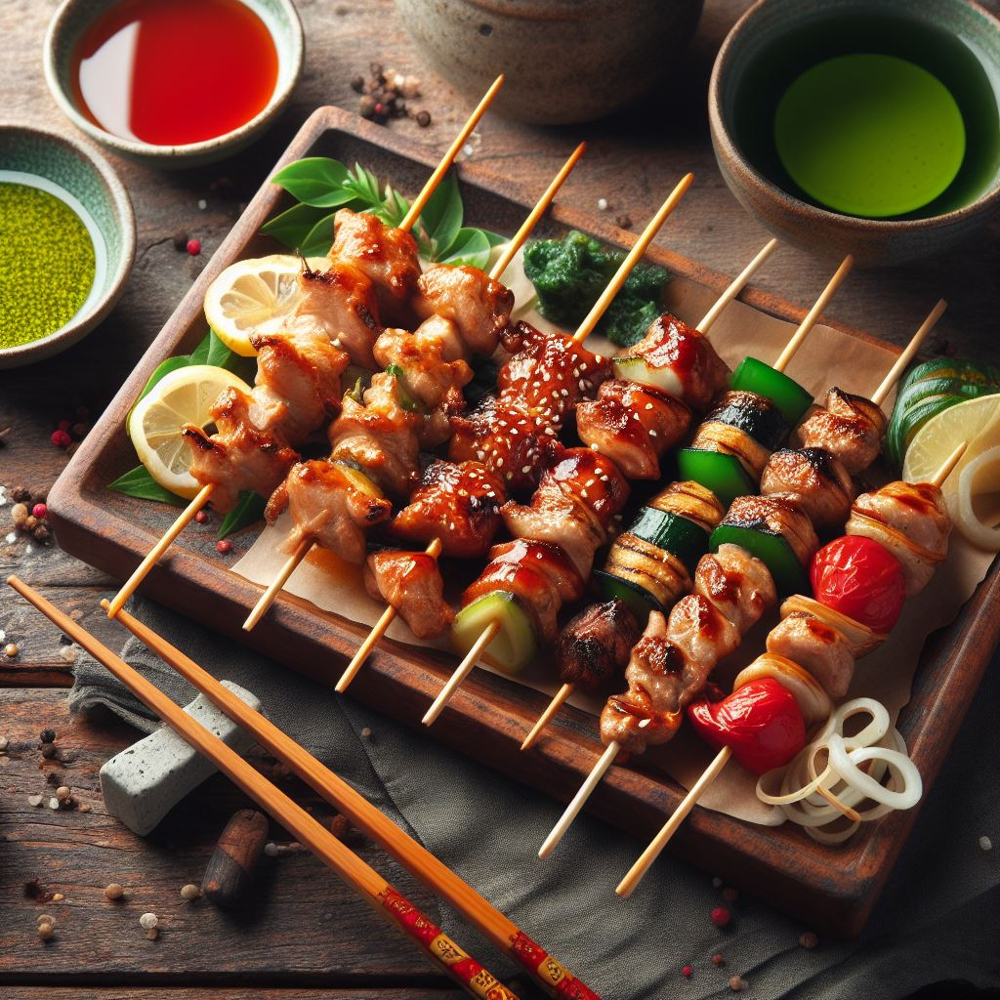
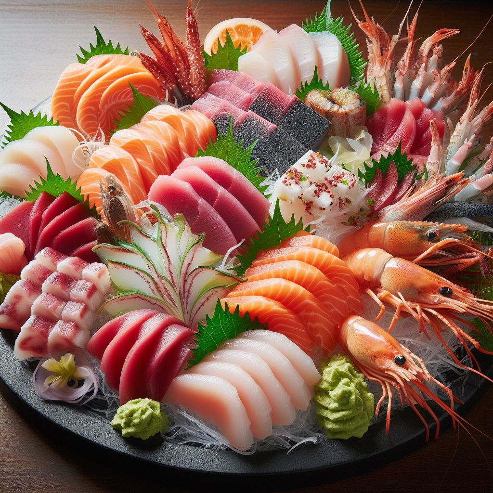
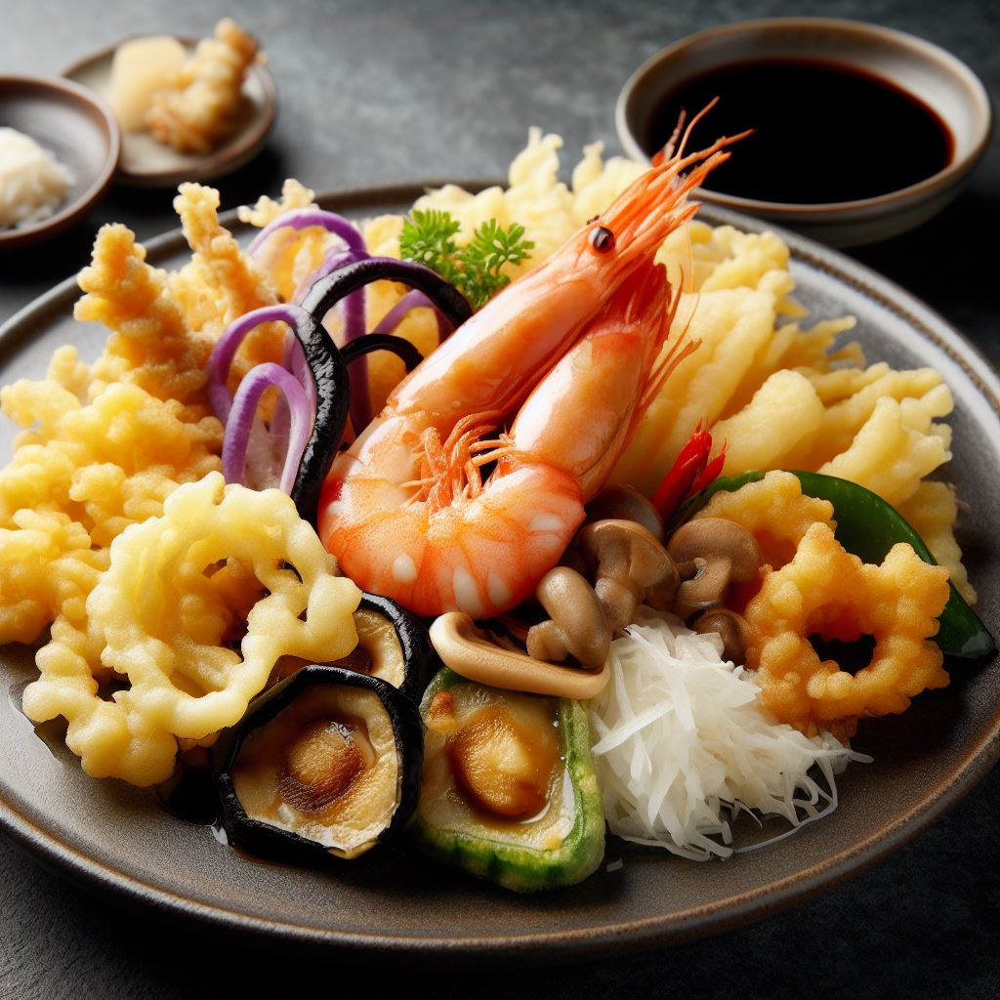
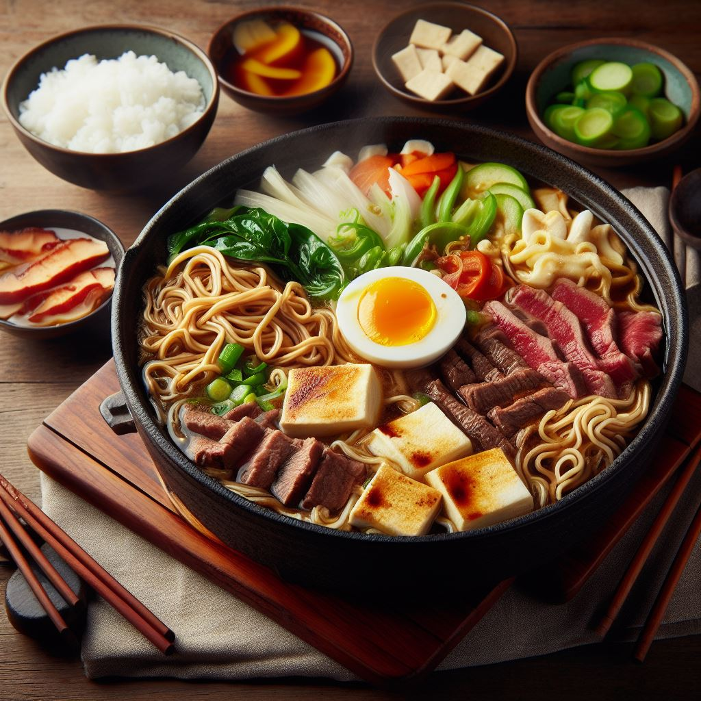
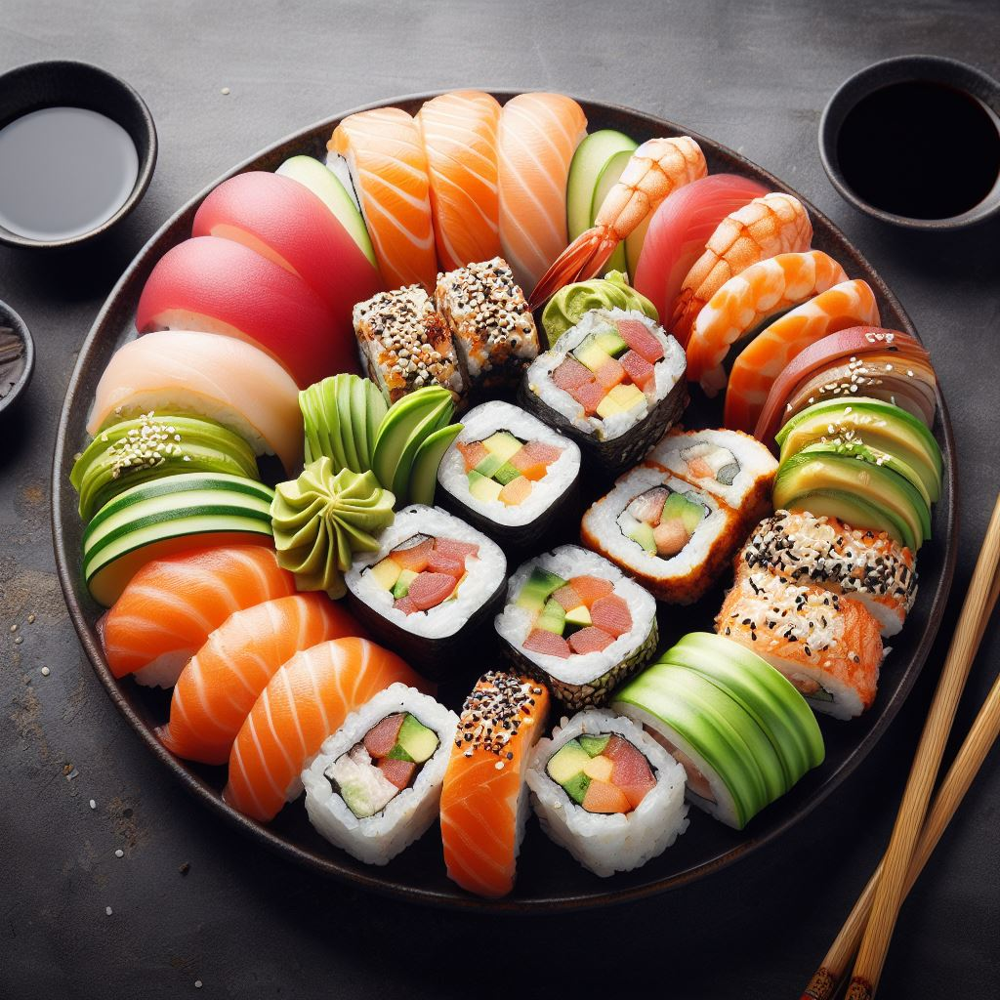
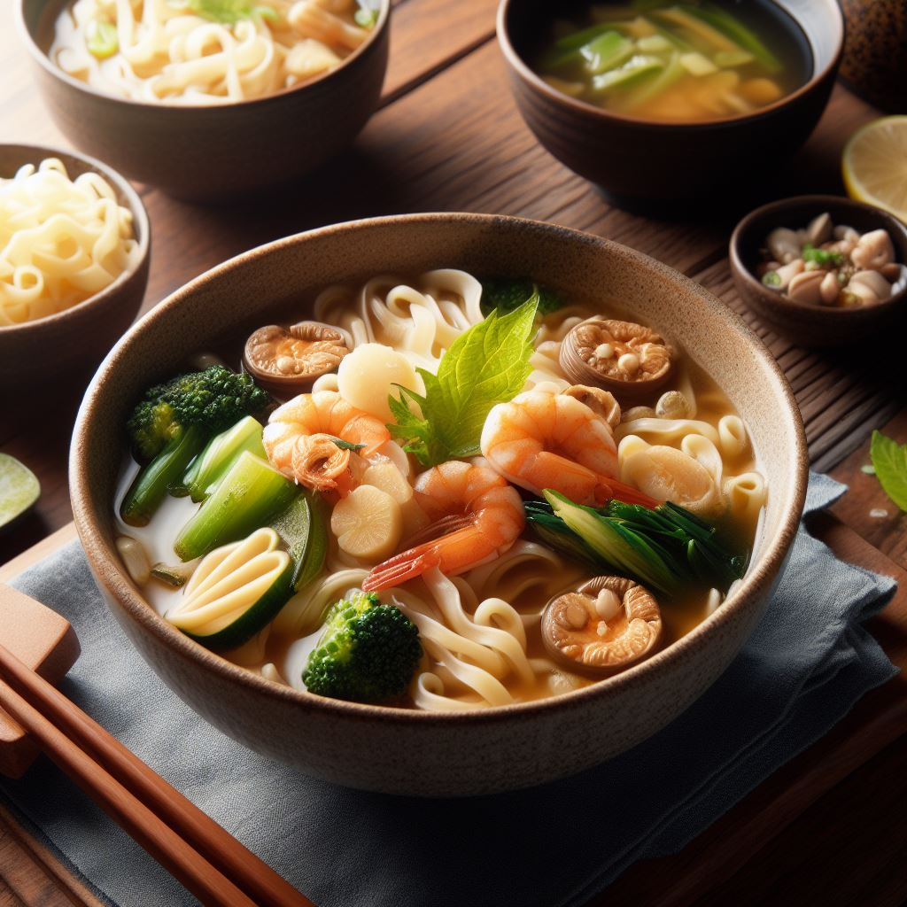
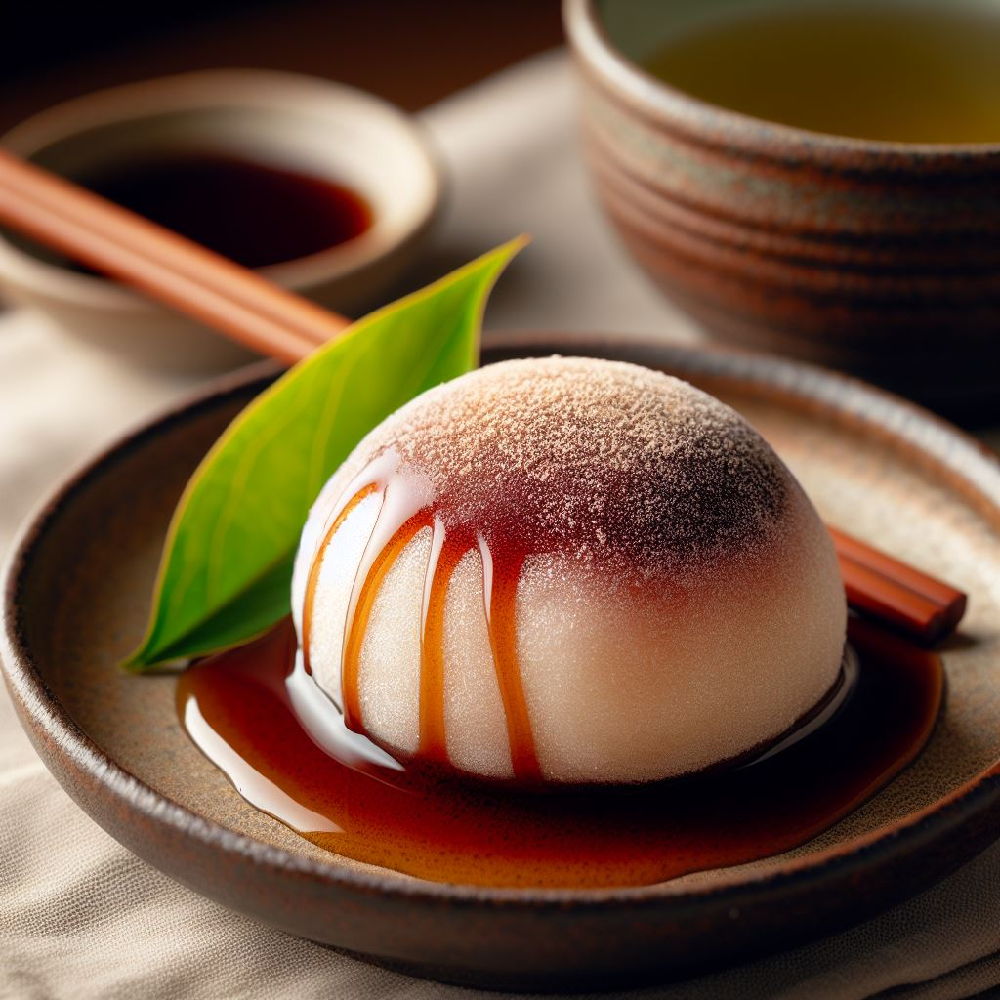
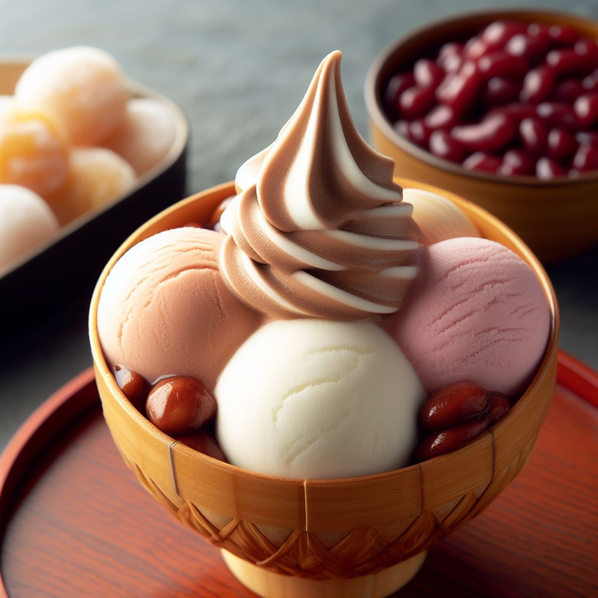
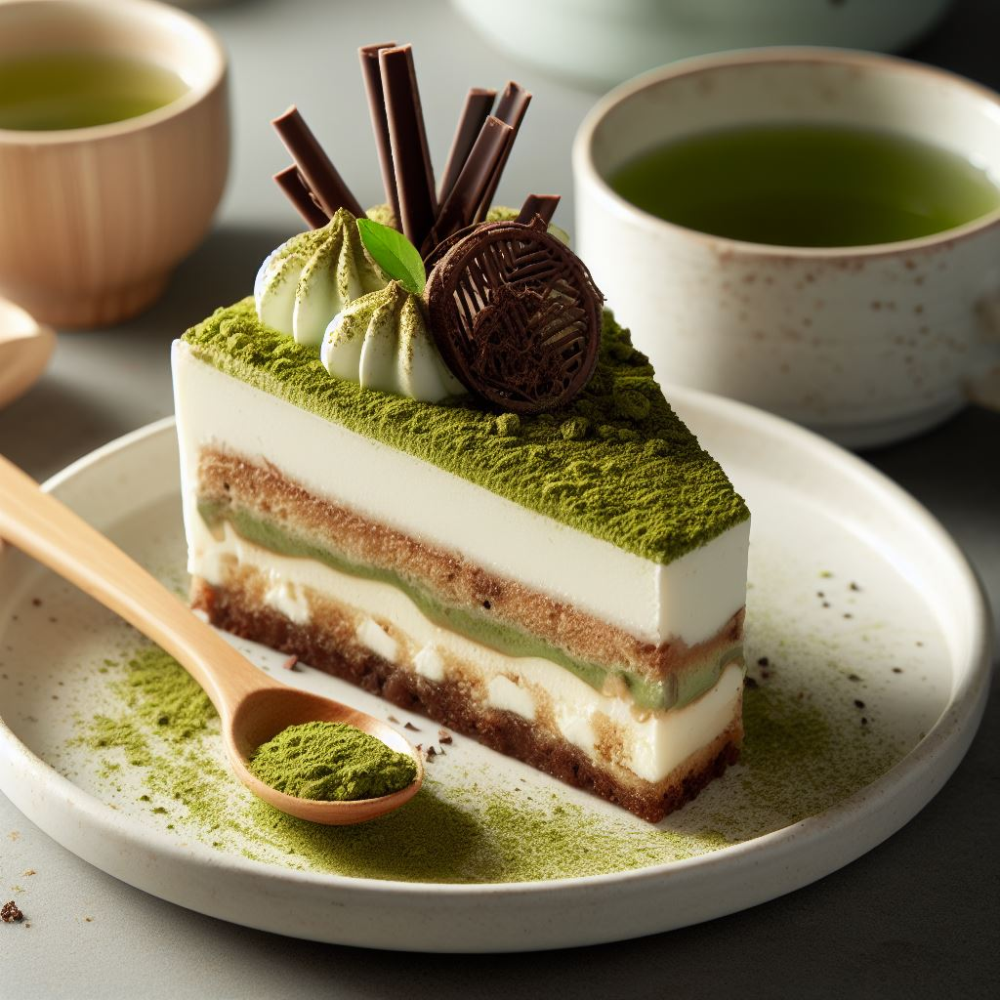

お品書き
前菜
- 和風焼き鳥
新鮮な鶏肉や野菜を、炭火でじっくりと焼き上げた逸品です。

醤油、たれ、塩からお好みに合わせて選択できます。 - 刺身盛り合わせ
まぐろ、鯛、鮭、車海老、ハマチなど、海から採れたばかりの最高の海鮮が並びます。

一口食べるたびに、新鮮な海の味わいが口の中で広がり、贅沢な味が楽しめます。 - 天ぷらの盛り合わせ
新鮮な海鮮や季節の野菜が、サクサクとした衣で包み込まれています。

外はカリっと、内部は柔らかくジューシーな素材が楽しめます。
主菜
- 和風鍋（すき焼き）
新鮮な和牛の薄切り肉、野菜、豆腐が、特製の甘辛い醤油ダレで煮込まれます。

料理の最後に卵を割り入れ、とろりとした卵とともにいただく瞬間は、まさに幸せのひとときです。 - 寿司プレート
新鮮な海の宝石が、一皿に美しく並べられた真の芸術品。

握り寿司、巻き寿司など、多彩な寿司が職人の繊細な技術で仕上げられています。 - 和風だしベースうどん
和風だしのベースは、昆布や鰹節、醤油で作られ、深い風味とコクが特徴です。

だしがもたらす奥深い味わいに、うどんのもちもちとした食感が調和し、一杯の幸福を提供します。
デザート
- 黒蜜大福
もちもちの白玉餡に包まれた、ほんのり甘い黒蜜が特徴です。

白玉の食感が、口の中でとろけるような甘さと絶妙に組み合わさり、贅沢な一口が楽しめます。 - 和三盆アイスクリーム
和三盆糖のほんのりした甘さが特徴で、日本の美しい風景や文化を思い起こさせる一杯です。

贅沢な甘味を楽しむことができます。 - 抹茶ティラミス
濃厚なマスカルポーネチーズと抹茶の風味が、口の中で甘さと苦みの絶妙なダンスを繰り広げます。

抹茶愛好家やデザート好きにとっては、必ずや心躍る一皿でしょう。